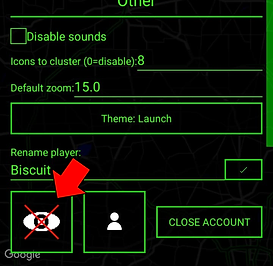
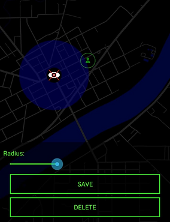

CounterForce is a GPS based game which, by necessity, shows your real life location to other players. It is of utmost importance that you make use of privacy zones, which mask your real-life location. The privacy zone is a cricle, placed by you, with a customizable size. When you enter the radius of this circle, your character in-game will remain at the edhe oso that no player can tell where you are inside the cricle. To set a privacy zone, go to the settings menu by tapping the grea icon on the bottom left of the main screen.
Tap the button with the red "X" over the eye, as shown in the image above.
Once on the privacy zone screen, tap the map and use the slider bar to increase the size of the privacy zone. Once you are finished, hit "save" and then "finish" and you are done. Hit "clear all" to remove all privacy zones so you can set new ones.